5.1.2.10 Path Loss Feature in Legacy Advertisements
This section explains how to enable the Path Loss feature with BLE Advertisements on PIC32-BZ6 Curiosity board using the MPLAB Code Configurator(MCC)
The path loss is defined as the difference between the remote transmit power level and the average local RSSI measurement for the connection. In other words, Path loss refers to the attenuation or reduction in signal strength as it travels through the wireless channel from the transmitter (BLE device) to the receiver.
Path loss monitoring is a crucial feature in BLE, allowing for real-time assessment of signal strength and providing valuable insights for connection management.
Users can choose to either run the precompiled Application Example hex file provided on the PIC32-BZ6 Curiosity Board or follow the steps to develop the application from scratch.
It is recommended to follow the examples in sequence to understand the basic concepts before progressing to the advanced topics.
Recommended Readings
-
Getting Started with Application Building Blocks – See Building Block Examples from Related Links.
-
Getting Started with Peripheral Building Blocks – See Peripheral Devices from Related Links.
-
FreeRTOS and BLE Stack Setup – See Peripheral - FreeRTOS BLE Stack and App Initialize from Related Links.
- See BLE Legacy Advertisements from Related Links.
-
BLE Software Specification – See MPLAB® Harmony Wireless BLE in Reference Documentation from Related Links.
Understanding Path Loss
Path Loss Zones
BLE path loss monitoring divides signal strength into specific zones to facilitate effective management. The core path loss zones are:
- Low Zone
- Middle Zone
- High Zone
The BLE Controller continuously evaluates path loss and notifies the Host when it transitions between these zones, based on predefined boundaries.
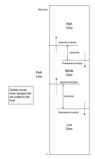
Calculating Path Loss
Path loss is determined as the difference between the remote transmit power level (the power at which the remote BLE device transmits) and the average local Received Signal Strength Indication (RSSI) measurement for the connection.
Zone Transition Criteria
- Transition to a Higher Zone: Path loss becomes greater than or equal to the upwards boundary when moving to a higher zone.
- Transition to a Lower Zone: Path loss becomes less than or equal to the downwards boundary when moving to a lower zone.
To prevent frequent zone switching, some hysteresis is provided. The upwards boundary should be greater than or equal to the downwards boundary, ensuring a smooth transition.
Correlation with Distance:
Path loss often correlates with the distance between BLE devices. A higher zone may indicate that the peer BLE device has moved farther away. This information can be invaluable for various applications, such as proximity detection and device localization.
Path Loss Measurement
- Power Control Request Procedure
The Power Control Request procedure involves periodically requesting the remote BLE device to provide its transmit power level. Combining this information with local RSSI measurements enables the calculation of path loss.
- Power Change Indication Procedure
The Power Change Indication procedure informs the Controller when the remote BLE device changes its transmit power level. This can occur due to adaptive power management or other factors. Upon receiving a power change indication, the Controller updates its path loss calculations accordingly.
Power Control Request procedure in context of path loss monitoring
The Power Control Request procedure is a critical component of path loss monitoring in Bluetooth Low Energy (BLE). This procedure enables the measurement of the remote transmit power level, which is essential for calculating path loss accurately.
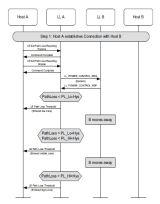
Practical Applications
- Proximity Detection: Path loss data can be used to estimate the distance between BLE devices accurately. This is especially useful for applications such as asset tracking, location-based services, and contact tracing.
- Adaptive Power Management: Knowledge of path loss allows the Controller to dynamically adjust the transmit power level. This optimization helps conserve energy while maintaining a stable connection.
- Connection Maintenance: Path loss notifications serve as early warnings of degrading connections due to increasing path loss. This can trigger actions like reconfiguration or re-establishment of the connection to maintain service quality.
- Interference Mitigation: In environments with substantial interference, path loss monitoring helps identify deteriorating signal quality. This early detection enables the implementation of countermeasures, such as channel hopping or adjusting transmission parameters.
Hardware Requirement
| S. No. | Tool | Quantity |
|---|---|---|
| 1 | PIC32-BZ6 Curiosity Board | 2 |
| 2 | Micro USB cable | 2 |
SDK Setup
Refer to Getting Started with Software Development from Related Links.
Software Requirement
To install Tera Term tool, refer to the Tera Term web page in Reference Documentation from Related Links.
Smartphone App
None
Programming the Precompiled Hex File or Application Example
Using MPLAB® X IPE:
-
Import and program the Precompiled Hex file:
<Harmony Content Path>\wireless_apps_pic32_bz6\apps\ble\building_blocks\peripheral\Legacy_ADV_Pathloss\precompiled_hex\legacy_adv_pathloss.X.production.signed.hex. -
Import and program the Precompiled Hex file:
<Harmony Content Path>\wireless_apps_pic32_bz6\apps\ble\building_blocks\central\central_conn\precompiled_hex\central_conn.X.production.signed.hex. - For detailed steps, refer to
Programming a Device in MPLAB® IPE in
Reference Documentation from Related Links.Note: Ensure to choose the correct Device and Tool information.
Using MPLAB® X IDE:
- Perform the following the steps mentioned in Running a Precompiled Example. For more information, refer to Running a Precompiled Application Example from Related Links.
-
Open and program the application:
<Harmony Content Path>\wireless_apps_pic32_bz6\apps\ble\building_blocks\peripheral\legacy_adv_pathloss\firmware\Legacy_ADV_Pathloss.X - Open and program the application:
<Harmony Content Path>\wireless_apps_pic32_bz6\apps\ble\building_blocks\central\central_conn\firmware\central_conn.X. - For more details on how to find the Harmony Content Path, refer to Installing the MCC Plugin from Related Links.
Demo Description
This application implements the path loss feature into a peripheral legacy advertisement application. The testing of this application is done by connecting the path loss feature included in the peripheral legacy application to a central connection application. After a successful connection, in the peripheral application serial console, the path loss and zone will be updated frequently.
Testing
- Using micro USB cables, connect the Debug USB on the Curiosity boards to a PC.
- Program the precompiled hex
files or application examples as mentioned. Note: One PIC32-BZ6 board should be programmed with the path loss peripheral legacy advertisement application and the other board with the central connection application, see BLE Connection from Related Links.
- The board programmed with the central connection application, once booted, will start scanning and upon finding the device with BT Address A6A5A4A3A2A1, will initiate a connection
- Open the Tera Term of the
board programmed with the path loss peripheral legacy advertisement
application and set the “Serial Port” to USB Serial Device and “Speed” to
115200. Press SW1 to reset the board. Upon reset, “Advertising” should be
displayed in Tera Term.
For more details on how to set the “Serial Port” and “Speed”, refer to COM Port Setup in Running a Precompiled Application Example from Related Links.

- Open the Tera Term of the
board programmed with the central connection application and set the “Serial
Port” to USB Serial Device and “Speed” to 115200. Press SW1 to reset the
board. Upon reset, the following should be displayed in the terminal windows
of the central and peripheral applications, respectively.
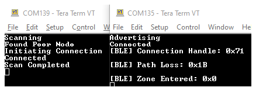
Developing the Application from Scratch using MPLAB Code Configurator
The path loss feature can be incorporated to any of the peripheral or central applications. Here, the path loss feature is showcased by implementing it in the peripheral advertisement application as a reference. Then, the path loss feature implemented in the peripheral legacy advertisement is tested by connecting it with the central connection application.
-
Create a new harmony project. For more details, see Creating a New MCC Harmony Project from Related Links.
-
To setup the basic components and configuration required to develop this application, import component configuration:Note: Import and export functionality of Harmony component configuration will help users to start from a known working setup of MCC configuration.
-
Accept dependencies or satisfiers when prompted.
-
Verify if the Project Graph window has all the expected configuration.
Figure 5-155. Project Graph 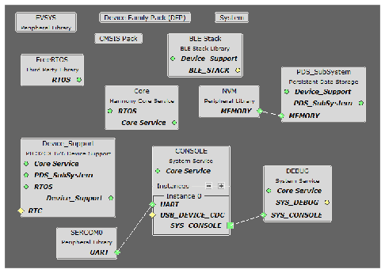
Generating a Code
For more details on code generation, refer to MPLAB Code Configurator (MCC) Code Generation from Related Links.
Files and Routines Automatically Generated by the MCC
After generating the program source from the MCC interface by clicking Generate Code, the BLE configuration source and header files can then be found in the following project directories.
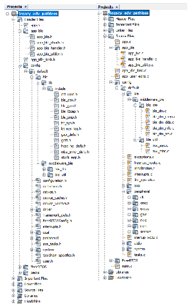
Initialization routines for OSAL, RF System, and BLE System are auto-generated by the MCC. See OSAL Libraries Help in Reference Documentation from Related Links. Initialization routine executed during program initialization can be found in the project file.
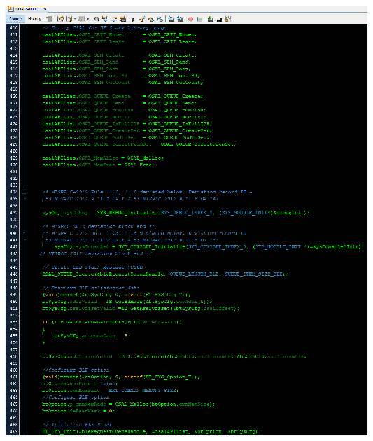
The BLE stack initialization routine executed during Application Initialization can be found in project files. This initialization routine is automatically generated by the MCC. This call initializes and configures the GAP, GATT, SMP, L2CAP and BLE middleware layers.
During system sleep, clock (system PLL) will be disabled and system tick will be turned off. FreeRTOS timer needs to be compensated for the time spent in sleep. RTC timer which works in sleep mode is used to accomplish this. RTC timer will be initialized after BLE stack initialization.
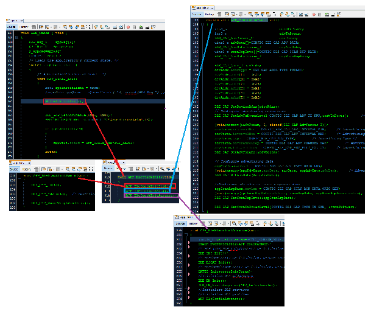

| Source Files | Usage |
|---|---|
app.c | Application State machine, includes calls for Initialization of all BLE stack (GAP,GATT, SMP, L2CAP) related component configurations |
app_ble.c | Source code for the BLE stack related component configurations,
code related to function calls from app.c |
app_ble_handler.c | All GAP, GATT, SMP and L2CAP event handlers |
app.c is autogenerated and has a state
machine-based application code sample. Users can use this template to develop their
own application. |Header Files
-
ble_gap.hcontains BLE GAP functions and is automatically included inapp.c
Function Calls
- MCC generates and adds the code to initialize the BLE Stack GAP, GATT, SMP and L2CAP in APP_BleStackInit()
- APP_BleStackInit() is the API that will be called inside the Applications
Initial State APP_STATE_INIT in
app.c
User Application Development
Include
- Include the user action. For more information, refer to User Action from Related Links.
definitions.hmust be included in all the files where UART will be used to print debug information.Note:is not specific to UART but instead must be included in all the application source files where any peripheral functionality will be exercised.definitions.h
Set PUBLIC Device Address in app_ble.c
-
BLE_GAP_SetDeviceAddr(&devAddr);
This API can be called in APP_BleConfig() located
in file app_ble.c.
BLE_GAP_Addr_T devAddr;
devAddr.addrType = BLE_GAP_ADDR_TYPE_PUBLIC;
devAddr.addr[0] = 0xA1;
devAddr.addr[1] = 0xA2;
devAddr.addr[2] = 0xA3;
devAddr.addr[3] = 0xA4;
devAddr.addr[4] = 0xA5;
devAddr.addr[5] = 0xA6;
// Configure device address
BLE_GAP_SetDeviceAddr(&devAddr);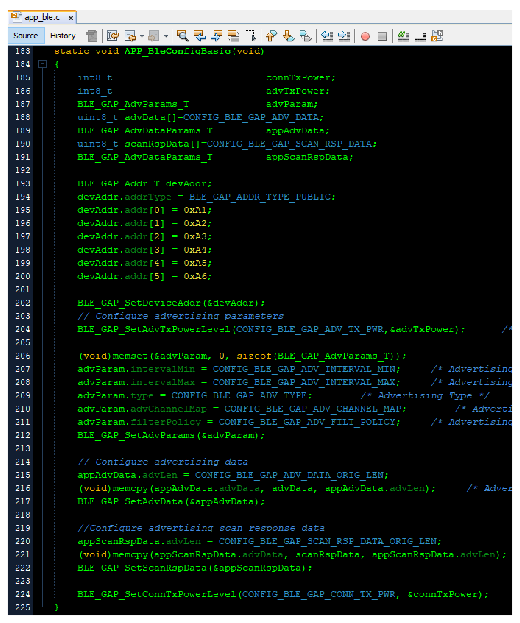
Start Advertisement
in app.c
-
BLE_GAP_SetAdvEnable(0x01, 0);
This API is called in the Applications initialstate - APP_STATE_INIT
in app.c.
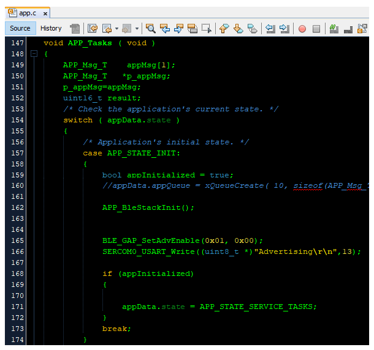
Path Loss configuration
Initially create two new enum to effectively handle the callback between the application layer and BLE stack.
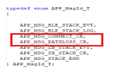
In the app_ble_handler.c file:
The path loss configuration is enabled after a successful connection establishment.
The steps required to enable the path loss feature begin with the reception of the
connected event (BLE_GAP_EVT_CONNECTED) in the
app_ble_handler.c file.
Upon receiving the connection event, control is passed from the BLE Stack to the
application layer using a queue mechanism with a specific message ID, namely
APP_MSG_CONNECT_CB.
In the application layer under service tasks:
Upon receiving the APP_MSG_CONNECT_CB message, the path loss
configurations, including the connection handle, threshold, hysteresis, and minimum
time spent, are set.
The BLE_GAP_SetPathLossReportingParams function is called, and the
earlier set path loss configurations are passed as parameters. It is recommended to
wait until this function call returns with a success event.
Upon receiving the success event, a new message is initiated via the queue with the
message ID set as APP_MSG_PATHLOSS_CB. Subsequently, the path loss
reporting enable function is initiated with the connection handle as a
parameter.
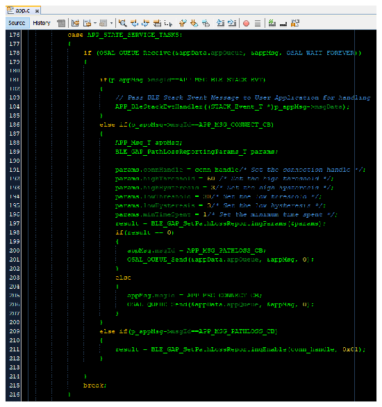
In the Path Loss Event Handler
(BLE_GAP_EVT_PATH_LOSS_THRESHOLD):
Within the Path Loss Event Handler, include the following code to gather information
about the path loss and determine the current zone that the device has entered. This
data is then displayed on the console or printed to an output. 
Where to go from Here
See BLE Connection from Related Links.